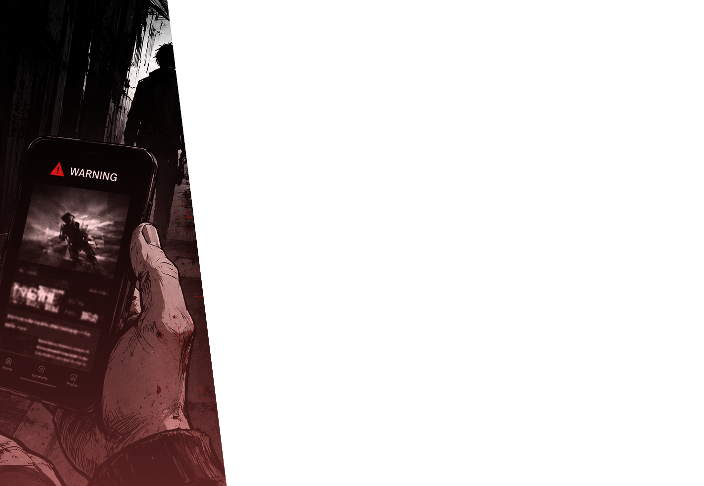
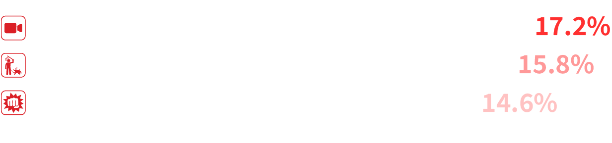
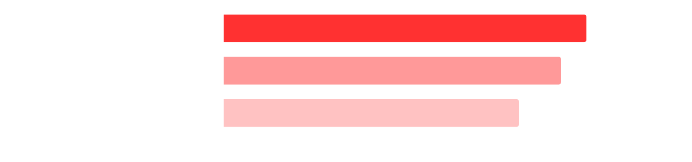
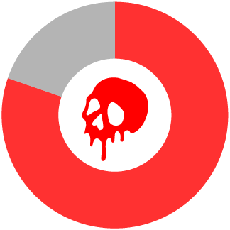
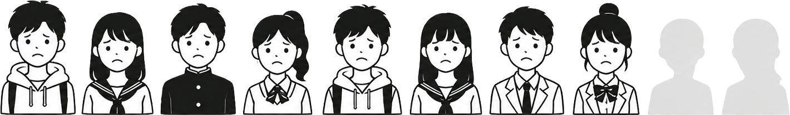
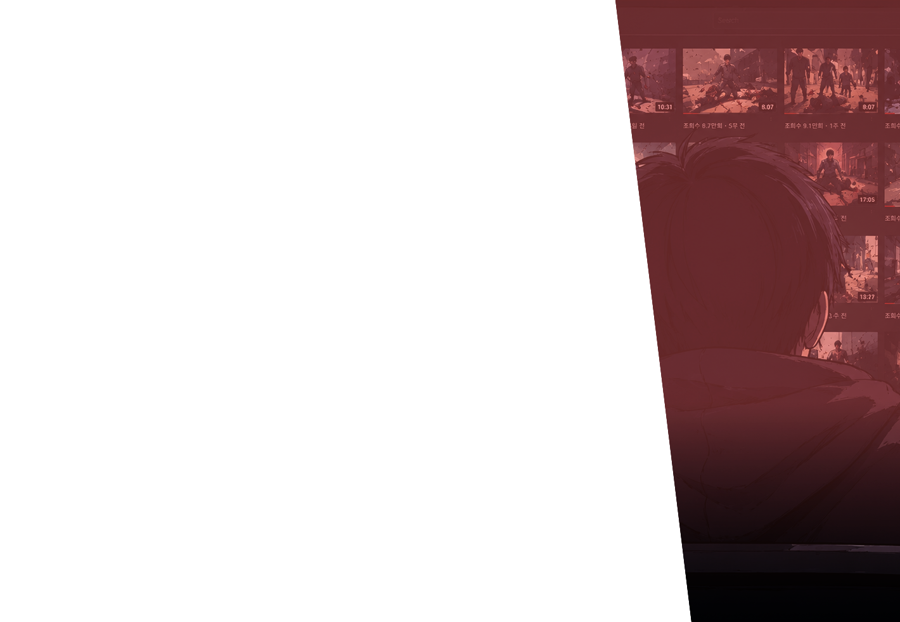
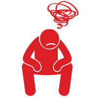
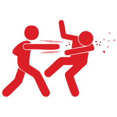

최근 경찰 수사와 디지털 유해환경 전문 조사에 따르면, 잔혹물의 유포 방식이
과거보다 훨씬 대담해졌으며 주 소비층에 미성년자가 다수 포함되어 있다.
해외 SNS 중심의
비공개 유포 방식
실제 사건사고 영상을
자세하게 설명 및 묘사
대부분 알고리즘에
의해 접하게 됨
자주 보게 되어
정서적 둔감화 일어남


직접 검색 또는 기타

추천 알고리즘에 의한 자동 재생

지나치게 폭력적인 영상을 '추천 알고리즘에 의해 자동 재생되거나 피드에 떠서' 접한 비율이 80.3%로 압도적이다.
(스스로 검색해서 찾아본 비율은 극소수)
충격적인 장면에 놀라 순간적으로 손가락을 멈추고 영상을 1~2초만 시청해도 AI는 이를 '강한 관심'으로 인지한다.
그 결과, 다음 피드부터는 유사한 수위의 잔인한 영상이 계속 노출된다.


폭력적 콘텐츠에 익숙해지면 현실의 감정에 무뎌지고 일상을 집중하기 어려워진다
반복적인 폭력 노출은 잔인한 장면에 대한 거부감을 줄이고 내성을 키운다

폭력 콘텐츠는 모방 심리를 자극하고 충동적 공격성 증가로 이어질 수 있다
이에 익숙해진 청소년들은 현실에서 타인이 다치거나 고통받는 상황과 마주쳤을 때,
공감하거나 도와주기보다 스마트폰을 켜서 촬영하고 밈(Meme)으로 소비하려는 공격적 성향을 보인다.
또한 자극적인 잔혹 영상을 지속적으로 본 청소년의 뇌파를 분석한 결과,
잔인한 시각 자극에는 무덤덤 반응을 보이는 반면 잔잔한 일상 자극에는 아예 뇌가 활성화되지 않는 '무감각 상태'가
관찰되었다.